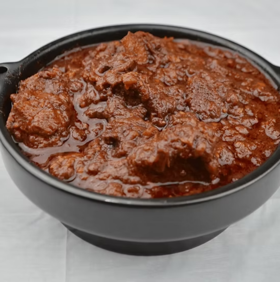
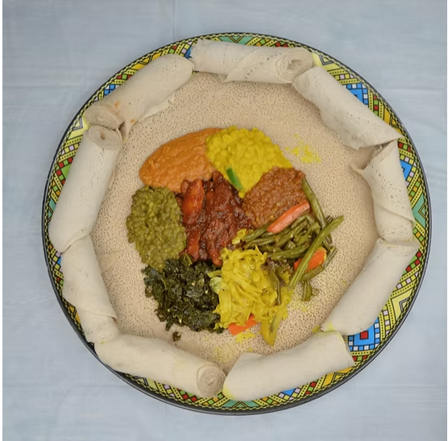

Doro Wat
Slow-cooked chicken drumstick and boiled egg simmered in a rich berbere sauce and served with fresh injera.
1000 ETB
Slow-cooked chicken drumstick and boiled egg simmered in a rich berbere sauce and served with fresh injera.

Tender beef sautéed with onions, tomatoes, peppers and Ethiopian spices, served sizzling in a traditional clay pot.

Delicious cubes of beef cooked with garlic, onions, tomatoes, peppers and authentic Ethiopian seasonings.

Tender beef slowly simmered in spicy red pepper sauce with aromatic herbs and spices.

A colorful vegetarian platter featuring lentils, cabbage, potatoes, kale, chickpeas and more, served on injera.

Smooth chickpea stew seasoned with garlic, onions and authentic Ethiopian spices.

Yellow split peas cooked with turmeric, onions, garlic and traditional Ethiopian herbs.

Spicy red lentils cooked in berbere sauce and served with fresh homemade injera.